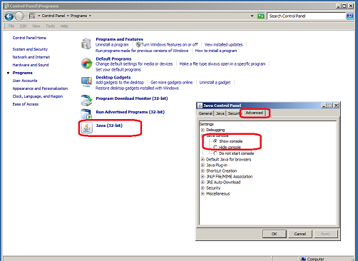

Sometimes it's needed to get more detailed information about why Colossus does not work. When Colossus is started using Java Web Start, the place where to enable the logging is the Java Console.
For example in Windows 7, go to Start → Control Panel → Programs → "Java (32 bit)" (or 64 bit). A new window opens, there in Advanced tab is an entry "Java console" which you can open by clicking on the "+" sign. See screenshot below.
 Before you change, look which is your state before ("Hide console" or "Do not start console"), because you might want to set it back to what it was when you don't need the console log any more.Set it to "Show console" and click "Apply" or "OK". From now on, whenever you start Colossus (or anything that uses Java from the browser), there will appear the java console, most notably a log window.
Note: this will now bring up this console for mostly everything where your browser runs something that uses Java, not only for Colossus. Whenever the console comes up and you don't need it, you can safely click the "Close" button (it won't stop the application/java from doing it's work, just the console window will disappear/hide). So when this is too annoying you might want to set the setting in control panel back to it's previous value.
Created August 31, 2012 by CleKa.